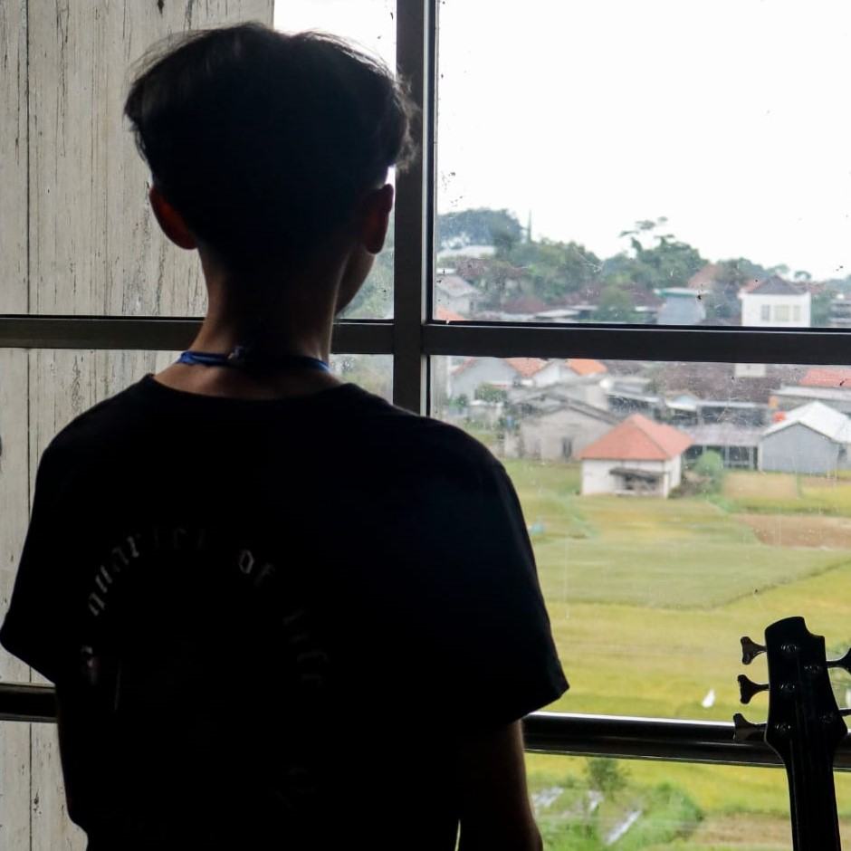
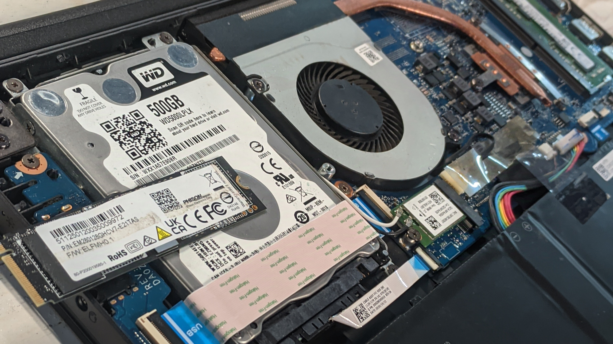
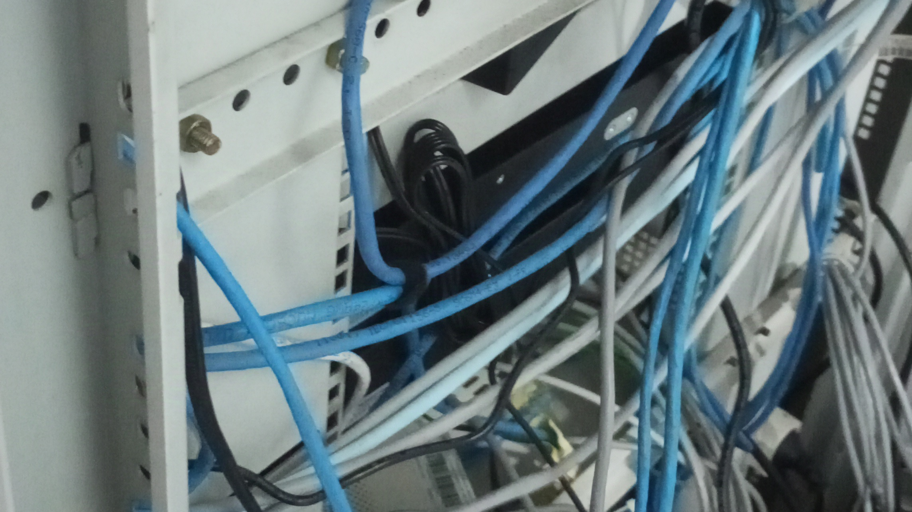
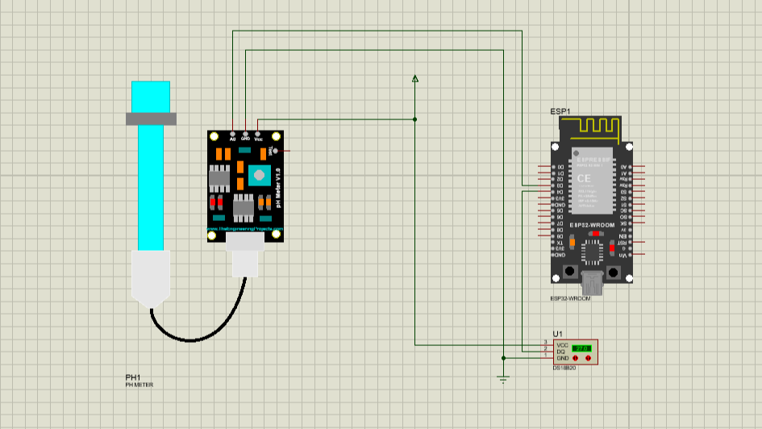
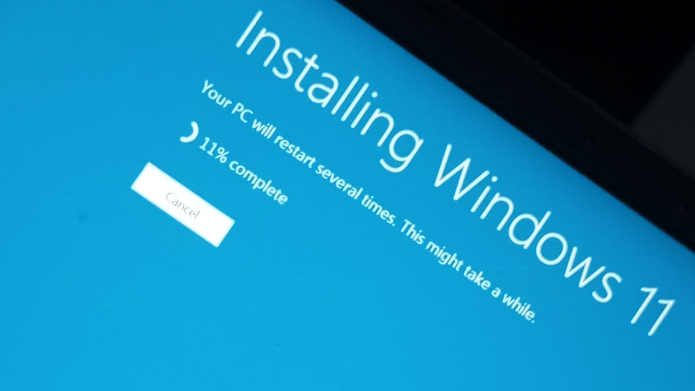
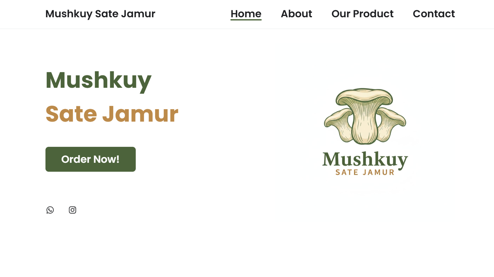
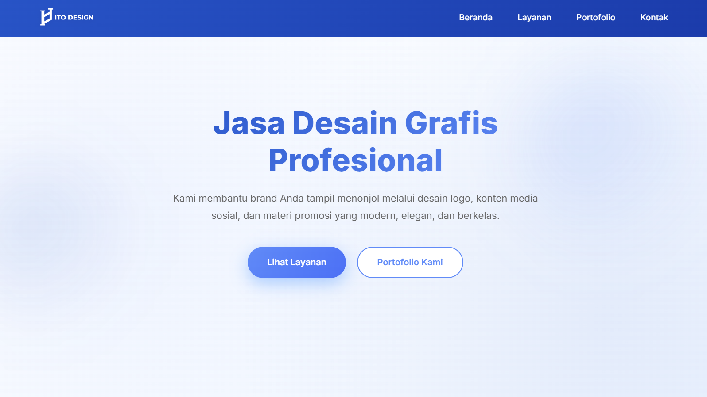

Saya adalah mahasiswa semester 4 jurusan S1 Sistem Komputer yang memiliki minat dalam bidang teknologi informasi, sistem komputer, dan pengembangan website. Saya terus mengembangkan kemampuan dalam pemrograman dan web development, serta berkomitmen untuk menciptakan solusi digital yang efektif dan profesional.

Saya adalah mahasiswa aktif di program studi Sistem Komputer dengan passion mendalam terhadap teknologi. Sejak awal kuliah, saya telah mengeksplorasi berbagai aspek dari dunia teknologi, mulai dari pemrograman, hardware, network, hingga pengembangan sistem yang kompleks.
Filosofi saya adalah "Belajar dengan Berbuat" - saya percaya bahwa pengalaman praktis adalah guru terbaik. Oleh karena itu, saya aktif mengerjakan proyek-proyek nyata, bereksperimen dengan teknologi terbaru, dan terus berinovasi untuk memahami bagaimana sistem-sistem modern bekerja.
Minat utama saya mencakup:
IPK 3.75/4.00
10+
15+
Inovasi & Kualitas
Diagnosis dan solusi masalah teknis dengan pendekatan sistematis
90%Pengembangan sistem embedded dengan Arduino, Raspberry Pi, dan ESP32
85%Pemahaman mendalam tentang arsitektur komputer dan komponennya
88%Konfigurasi jaringan, cybersecurity, dan protokol komunikasi
82%HTML, CSS, JavaScript, dan framework modern untuk UI yang responsif
87%Python, C++, database design, dan API development
84%
Layanan perbaikan laptop dengan diagnosis menyeluruh dan penggantian komponen yang rusak.

Penggantian switch jaringan dengan physical installation, cable management, dan konfigurasi untuk sistem yang lebih optimal.

Sistem kontrol suhu real-time menggunakan mikrokontroler ESP32, sensor pH, dan interface web untuk monitoring jarak jauh.

Layanan instalasi dan konfigurasi sistem operasi Windows dengan optimasi performa, pengaturan keamanan, dan penyesuaian pengguna.

Website e-commerce untuk UMKM Sate Jamur dengan fitur produk, galeri, dan sistem pembayaran.

Website portfolio responsif dengan desain modern, animasi smooth, dan interaksi user yang elegan menggunakan HTML, CSS, dan JavaScript.